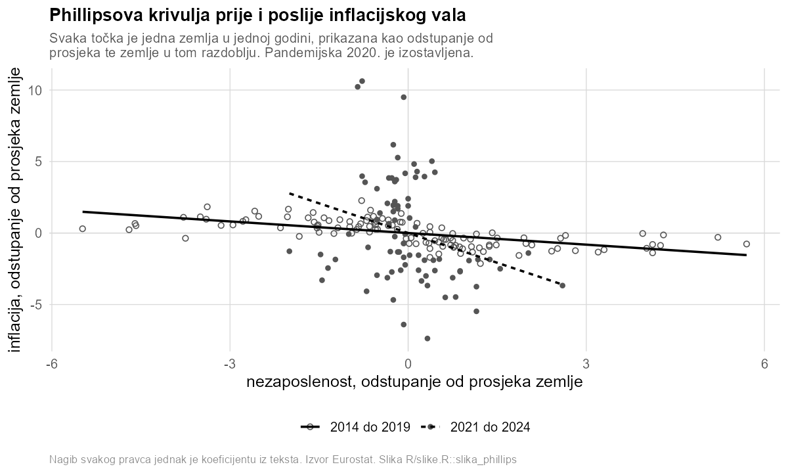

Radionica · 60 minuta · bez pripreme i instalacije
AI u ekonomskim istraživanjima
Kako AI ugraditi u istraživački repozitorij, a ne u prozor preglednika
Izvršavanje je pojeftinilo, a provjera nije. Ta se razlika nakuplja kao dug, a četiri datoteke u repozitoriju taj dug naplaćuju pri svakom pokretanju.
Jedan pojam nosi cijeli sat
Dug provjere
Dok ste kod pisali sami, provjeravali ste usput, po deset redaka, a da to niste ni zvali provjerom. Agent vam vrati dvjesto redaka odjednom, pogledate prvih dvadeset i idete dalje. Ono što ste preskočili nije nestalo nego se nakupilo. To je razlika između koda koji radi i koda za koji znate zašto radi, a kamate se plaćaju na recenziji, kod koautora i kod vas samih za godinu dana.
Gdje agenta pustiti, a gdje ne
Pitanje nije koliko je zadatak težak. Pitanje je biste li primijetili da je odgovor kriv. Umjetna inteligencija pojeftinila je izvršavanje, ali nije pojeftinila provjeru.
Lako provjeriti
Spajanje tablica, čišćenje podataka, slika po predlošku. Vidite ishod pogledom, pa delegirajte bez razmišljanja. Kada je takav zadatak još i težak za izvršiti, dobitak je najveći.
Teško provjeriti
Odabir oznaka zemalja, definicija uzorka, mjerni sloj. Rezultat izgleda jednako uredno i kada je točan i kada nije, pa provjera ide u kod, a ne na vaš pogled.
Ne delegira se
Istraživačko pitanje, izbor specifikacije, tumačenje nalaza i snaga tvrdnje. To su odluke koje mijenjaju pitanje na koje odgovarate, a ne odgovor.
AI sloj · četiri datoteke
Ispod haube postoje samo dvije ručke. Kontekst je sve što model u tom trenutku vidi, a ograda odlučuje što smije učiniti. Iz toga slijedi da kontekst zapišete u datoteku umjesto da ga ponavljate u razgovoru, a dopuštenja popišete sami umjesto da se pouzdate u dobru namjeru.
1
CLAUDE.md je kontekst koji agent čita svaku sesiju. Sprječava povratak na opće pretpostavke o tome kako se radi ekonomija.
2
.claude/settings.json su ograde, dakle popis onoga što smije, što vas mora pitati i što je zabranjeno. Sprječava da samostalan proces dira što god želi.
3
.claude/rules/ je pravilo koje se učitava uz svaku izmjenu koda. Sprječava da se posao proglasi gotovim bez gradnje.
4
tests/checks.R su provjere koje ruše gradnju kada padnu. Sprječavaju da uvjerljiva besmislica uđe u tekst.
Peta je git, ali git već imate. Petlja koja ih povezuje glasi ovako. Opišem što treba, agent napravi plan, ja odobrim, agent izvrši, sustav provjeri, ja zapišem promjenu.
Pokazni primjer
Phillipsova krivulja u dvadeset zemalja europodručja od 2014. do 2024. godine, na dvije javne Eurostatove tablice. Primjer je namjerno običan i svakome poznat, jer radionica nije o nalazu nego o tome kako je nalaz nastao. Cijeli lanac od podatka do rečenice pročita se naglas u dvije minute, a nijedan broj u tekstu nije upisan rukom.

Demonstracija uživo · prvo korist, pa onda šteta
U prvom dijelu agent dobiva stvaran zadatak i radi ga dobro, od plana preko izvršenja do osvježenog teksta. U drugom su u projekt podmetnute tri greške koje on sam otkriva.
1
Curenje ograničenih podataka
Sadržaj koji ne smije izaći nađe se u javnom tekstu. Provjera pokazuje da je zabrana datoteka, a ne dobra namjera.
2
Koeficijent upisan rukom
Broj u tekstu više ne odgovara procjeni iz koje je nastao. Tekst ne smije moći odstupiti od tablice.
3
Grčka koja tiho nestane
Eurostat Grčku označava kao EL, a ostatak svijeta piše GR. Filtar izgubi cijelu zemlju, panel padne s 220 na 209 opažanja, nagib se pomakne, a ništa ne pukne.
Nijedna od tri greške ne ruši program i sve tri bi prošle recenziju.
Sadržaj sata
1
Dug provjere i razlog zbog kojeg raste brže nego prije.
2
Podjela zadataka prema tome koliko je skupo provjeriti ishod.
3
Model, alati, ograda i kontekst, dakle što se zapravo događa ispod haube.
4
Dvije ručke koje iz toga slijede i četiri datoteke koje ih zapisuju.
5
Izbor načina rada prema potrebnoj razini nadzora.
6
Demonstracija uživo, prvo korist pa onda tri tihe greške.
7
Povjerljivi podaci, uvjeti korištenja i lokalni modeli.
8
Podjela rada i odluke koje se ne delegiraju.
Materijali
Što odnosite
Repozitorij koji se klonira i pokreće jednom naredbom na svakom prijenosnom računalu, upute za presađivanje istog sloja na vlastiti projekt u tri koraka, kratko mjerilo za odluku o tome što se delegira, te sažetak na jednoj stranici.
Kome je namijenjena
Istraživačima, doktorandima i analitičarima u institucijama, bez pretpostavke o programerskom iskustvu. Prati se bez pripreme i bez instalacije, a potreban je samo projektor.
Jezik
Izlaganje je na hrvatskom jeziku. Kod i tehnički nazivi na engleskom su uz priloženi pojmovnik.
Napomena o podacima
Podaci u pokaznom projektu su stvarni i javni. Izvor su Eurostatove tablice prc_hicp_aind za harmonizirani indeks potrošačkih cijena i une_rt_a za stopu nezaposlenosti, a preuzimaju se priloženom skriptom. Rezultat je opisni nalaz, a ne procjena uzročnog učinka, i nije doprinos literaturi nego pokazni objekt radionice.
Radionica stoji samostalno i ne pretpostavlja da je publika slušala ijedno drugo izlaganje.